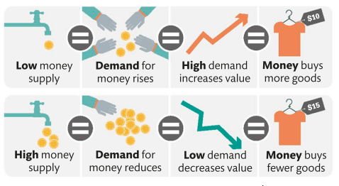

Money
What is money?
A dollar, whether under a Gold Standard or not, is something that would be intimately familiar to the faceless bureaucrats of the International Bureau of Weights and Measures: it is a unit of measurement for economic value---an arbitrary increment on an abstract scale. So like a metre or a kilogram, a dollar itself doesn't refer to any physical thing at all---even if the length or mass or value of some particular physical thing has been agreed on as its standard.
Economic value is a property of the social world; whereas linear extension, mass, temperature, and so on are properties of physical world. The choice of standard for the measurement of physical concepts is a question of technical efficiency. But the uses to which measurement of the social property of economic value are put are qualitatively quite different; It is, therefore, not just a technical, but also an ethical question; and the criterion for choosing it is not only which standard unit is efficient, but which is fair.
The universal application of the new concept of economic value brings with it a major problem: the lack of any intrinsic limit to consumption, accumulation, and the quest for status.
Money is not a commodity medium of exchange, but a social technology composed of three fundamental elements.
-
The first is an abstract unit of value in which money is denominated.
-
The second is a system of accounts, which keeps track of the individuals' or the institutions' credit or debt balances as they engage in trade with one another. The third is the possibility that the original creditor in a relationship can transfer their debtor's obligation to a third party in settlement of some unrelated debt.
-
This third element is vital. Whilst all money is credit, not all credit is money: and it is the possibility of transfer that makes the difference. An IOU which remains for ever a contract between just two parties is nothing more than a loan. It is credit, but it is not money. It is when that IOU can be passed on to a third party---when it is able to be "negotiated" or "endorsed," in the financial jargon---that credit comes to life and starts to serve as money. Money, in other words, is not just credit---but transferable credit.
Bill Discounting Process:
The step-by-step process of bill discounting is given below:
-
A seller supplies goods or services to a buyer and raises an invoice.
-
The buyer accepts the invoice. This approval means the buyer acknowledges the invoice and promises to make the payment on the due date.
-
The seller approaches the financial institution to get the bill discounted.
-
The financial institute verifies the creditworthiness of the buyer and the legitimacy of the bill.
-
Once approved, the bank disburses the funds to the seller after deducting the pre-defined fee, discount, or appropriate margin.
-
Thus, the seller gets a quicker payment for the invoice, which can be used for other business purposes.
-
At the end of the original credit period, the buyer makes the payment to the financial institution.
For sellers to accept buyers' IOUs in payment, they must be convinced of two things.
-
That the money's issuer is creditworthy.
-
For credit to become money, sellers must also trust that third parties will be willing to accept the debtor's IOU in payment as well. They must believe that it is, and will remain indefinitely, transferable---that the market for this money is liquid.
Both these factors are determined not technologically or physically but by the general levels of trust and confidence.
History commodity vs system
Looking at the bartering example from Adam Smith's book. In every case, these were examples of trade that was accounted for in pounds, shillings, and pence, just as it was in modern England. Sellers would accumulate credit on their books, and buyers debts, all denominated in monetary units. The fact that any net balances that remained between them might then be discharged by payment of some commodity or other to the value of the debt did not mean that that commodity was "money." To focus on the commodity payment rather than the system of credit and clearing behind it was to get things completely the wrong way round.
A moment's reflection shows that a staple commodity could not be used as money, because ex hypothesis the medium of exchange is equally receivable by all members of the community. Thus if the fishers paid for their supplies in cod, the traders would equally have to pay for their cod in cod, an obvious absurdity.
If the fei of Yap (the big stones used at a German owned island in the pacific) were not a medium of exchange, then what were they? The fei were just tokens by which these accounts were kept. As in Newfoundland, the inhabitants of Yap would accumulate credits and debts in the course of their trading in fish, coconut, pigs, and sea cucumber. These would be offset against one another to settle payments. Any outstanding balances carried forward at the end of a single exchange, or a day, or a week, might, if the counterparties so wished, be settled by the exchange of currency---a fei---to the appropriate value; this being a tangible and visible record of the outstanding credit that the seller enjoyed with the rest of Yap.
Coins and currency, in other words, are useful tokens to record the underlying system of credit accounts and to implement the underlying process of clearing. They may even be necessary in an economy larger than that of Yap, where coins could drop to the bottom of the sea and yet no one would think to question the wealth of their owner. But currency is not itself money. Money is the system of credit accounts and their clearing that currency represents or simply tokens to keep track of the underlying and ever-fluctuating balances of millions upon millions of credit and debt relationships
Why, in short, is the conventional theory of money so resilient? There are two basic reasons, and they are worth dwelling on.The first reason has to do with the historical evidence for money. The second reason why the nature of money is so difficult to pin down, and why it has been and remains a subject of such controversy, is precisely because it is such an integral part of our economies. When we try to understand money, we are like the fish of the Chinese proverb, trying to know the very water in which it moves.
Bank closure Ireland
On 4 May 1970, a prominent notice appeared in Ireland's leading daily newspaper, the Irish Independent, with a simple but alarming title: "CLOSURE OF BANKS." At the time, however, this development was widely expected---not least because it had happened once before, in 1966. The matter of dispute between the banks and their employees was a familiar one in the Europe of the late 1960s: the extent to which pay was keeping up with prices. High inflation throughout 1969---by the autumn, the cost of living had risen by more than 10 per cent over the previous fifteen months---had prompted a demand by the employees' union for a new pay settlement. The banks had refused, and the Irish Bank Officials' Association had voted to strike.
The review of the closure concluded not only that "the Irish economy continued to function for a reasonably long period of time with its main clearing banks closed for business," but that "the level of economic activity continued to increase" over the period.
The closure of the Irish banks showed that the system of credit creation and clearing need not be the officially sanctioned one. The official system---the banks---was suspended for the best part of seven months. But money did not disappear.
History of numbers, accounting and language
In Mesopotamia, Schmandt-Besserat realised, a complex system of clay tokens had enabled this ancient method to attain a previously unknown level of sophistication. Each different shape and size of token represented a different type and quantity of a particular staple commodity: incised cones for bread, ovoids for oil, rhomboids for beer, and so on. Around 3100 bc, in Mesopotamian Uruk, a critical innovation was made. Records began to be kept not using collections of the tokens themselves, but by making impressions of the tokens on moist clay tablets. Soon after the invention of writing, however, another momentous improvement was made. Instead of writing five sheep symbols to signify five sheep, separate symbols for the number five and the category sheep were introduced. Now, only two symbols were required, instead of five.
Correspondence-counting (making notches in tally sticks) requires no notion of abstract number; no concept, that is, of number separate from the things being counted. The new system did. Not only had Ur invented writing, it had almost simultaneously invented the concept of number---and thereby opened the way to the development of mathematics. The invention of writing and abstract number set the stage for the development of the third technology at the heart of Mesopotamian society: accounting.
Money was a technology built on the basis of the revolutionary notion of economic value---an invisible substance that was both everywhere and nowhere, and which had a presence in the physical world only via the symbolism of coinage. As such, the "nominalist" view that money has value only by convention came naturally to the Greeks.
Smith's metaphor for Mandeville's paradoxical process---the "invisible hand" which ensures that "by pursuing his own interest [the individual] frequently promotes that of the society more effectually than when he really intends to promote it"---is so famous that it has long ago taken on a life of its own
Banks and intermediators
During the 14-16 a hierarchical organisation of credit was established as a predecessor to banking and an alternative to state/monarchy ownership of money (minting and determining the value of money). A local tradesman's promise to pay might not be worth much beyond his small circle of suppliers and clients. But the promise of one of the international merchant houses, with their much larger volume of trade, their great stocks of reserves, and their long histories of success, was a different matter. If a great merchant substituted his word for that of a local tradesman, an IOU that might previously have circulated at most within the local economy could be transformed into one that could circulate anywhere where the great merchant's prestige was acknowledged. A pyramid of credit could be constructed, with the obligations of local tradesmen as the base, larger wholesalers in the middle, and the most exclusive, well-known, and tight-knit circle of international merchants at the top.
A bank is in essence an institution which writes IOUs on the one hand---these are its deposits, its bonds, its notes; generically, its liabilities---and accumulates IOUs on the other---its loans and its securities portfolio; generically, its assets.
While in normal businesses the main assets are plants, premises, inventories almost all a bank's assets are nothing but promises to pay, and almost all its liabilities likewise.
IOUs has two fundamental characteristics: its creditworthiness---how likely it is that it will be paid when it comes due---and its liquidity---how quickly it can be realised, either by sale to a third party or simply by coming due if no sale is sought. Accepting a promise to pay in a year's time entails more risk than accepting a promise to pay tomorrow: a lot more can go wrong in year than in twenty-four hours. This is the dimension of liquidity risk---Then there is the possibility that the IOU's issuer will not be able to pay at all, regardless of the time frame this is the dimension of credit risk.
The whole business of banking resolves into the management of these two types of risk, as they apply both to a bank's assets and to its liabilities.
Banks' liabilities remain short-term and of fixed nominal value, and their assets remain long-term and of uncertain nominal value
When the higher complications of credit risk are absent, the essence of the banker's art comes into focus. It is nothing more than ensuring the synchronisation, in the aggregate, of incoming and outgoing payments due on his assets and liabilities---which are themselves, of course, the aggregated liabilities and assets of all his borrowers and creditors.
Bit by bit, the exchange-bankers had assembled all the moving parts of a great machine that enabled private credit to circulate as money throughout Europe. All three of money's fundamental components were there
-
the system had its own unit of abstract value, the cu du marc.
-
It had its own system of accounting---the rules of book-keeping set out in Pacioli's De Arithmetica, and the standard protocols agreed between the great merchant houses for applying it.
-
And it had its system for the transfer and clearing of credit balances using the bill of exchange and the great clearing house of the central fair.
The system of exchange by bills had become nothing other than "a supranational private money interacting with domestic public monies." With their perfection of the system of exchange by bills, they had constructed a viable private money on a continent-wide scale.
It is as true of the field of economic activity, as in every other, that there is a certain amount of inescapable risk in the world. Money is, on the unconventional view, a system for deciding how this risk is shared out. In the jargon of economists, genuine economic risk---uncertainty about whether the harvest will be plentiful or poor, or whether next month's meticulously planned product launch works or it doesn't
Money answers the question of who bears which risks under what circumstances. Of course, money is not the only system for organising society that can answer this question. The redistributive engine of the Western welfare state, in which social rights rather than economic value determine who gets what, is an obvious example of an alternative. But the way that money organises the distribution of economic risk in society---by making a simultaneous promise of stability and freedom---has made it epidemically successful throughout history.
Creation of the bank of England (around 1650)
To be granted the privilege of note issue by the crown (to merchants or others), which would anoint the liabilities of a private bank with the authority of the sovereign---this, they realised, was the Philosopher's Stone of money. It was the endorsement that could liberate private bank money from its parochial bounds. They would lend their credit to the sovereign---he would lend his authority to their bank. What they would sow by agreeing to lend, they would reap a hundredfold in being allowed to create private money with the sovereign's endorsement. Henceforth, the seigniorage would be shared.
Although all money is transferable credit, there is one issuer of money whose obligations are, under normal circumstances, more creditworthy and more liquid than all the rest: the sovereign, which in the modern financial system had delegated its monetary authority to the Bank of England. Money depends on social trust, and "[c]redit in business is like loyalty in government," wrote Bagehot in a famous comparison, "[it] is a power which may grow, but cannot be constructed."
Supply and demand

Central bank
Usually, the central bank will try to maintain its target interest rate by pumping reserve money into or out of the banks. This affects demand for reserve money and, therefore, the price the central bank can charge commercial banks to borrow---the reserve rate.
To lower interest rate: Central bank buys securities from commercial banks, to increase the supply of reserves. Higher supply, will decrease the cost of borrowing and the interest rate will go down.
To increase interest rates: Central bank sells securities to commercial banks, to decrease the supply of reserves. Lower supply, will increase the cost of borrowing and the interest will go up.
When there is high demand for central bank money, the reserve interest rate rises.
When the demand for central bank money is low, the reserve interest rate falls
By raising or lowering its reserve rate of interest, a central bank can influence the size of commercial banks' reserves, and thus their borrowing and lending rates and the amount of money in circulation. This affects spending, and inflation, because when interest rates are lower, saving is less and borrowing more attractive, and when interest rates are higher, the opposite is true.

Increase money supply


Government
Money
Money must have (people must be confident and trust that if they accept money, they can use it to pay for good) ...
-
Value not perishable
-
be durable
-
portable
-
uniform,
-
divisible
-
in limited supply
-
and be usable as a means of exchange.
-
Underlying all of these